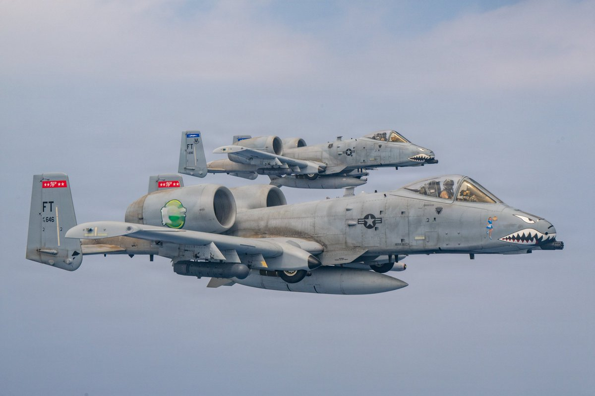
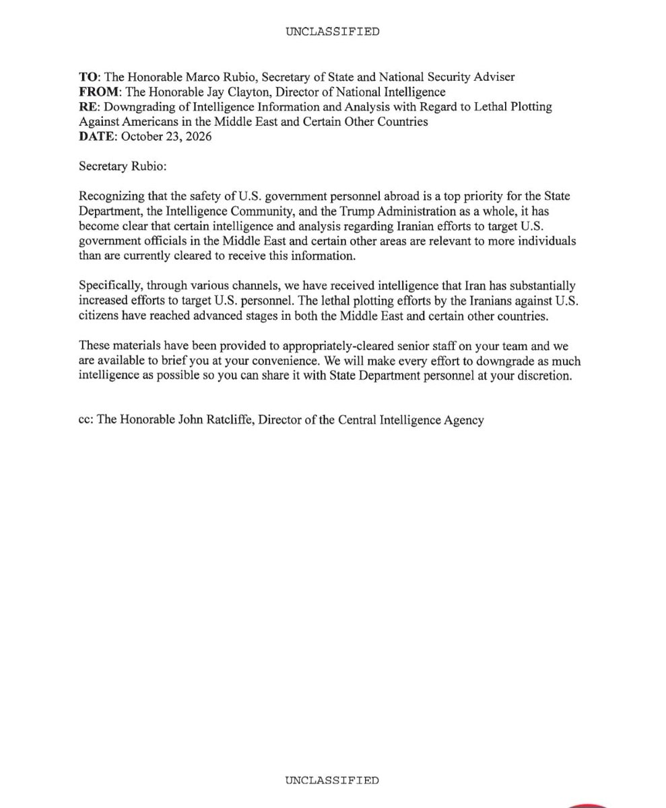
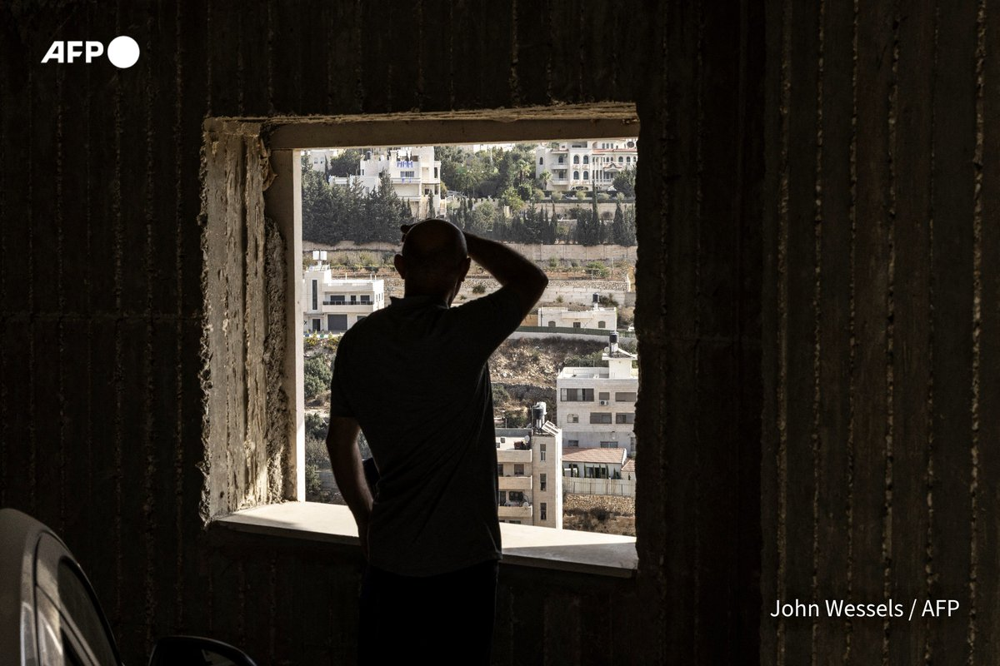
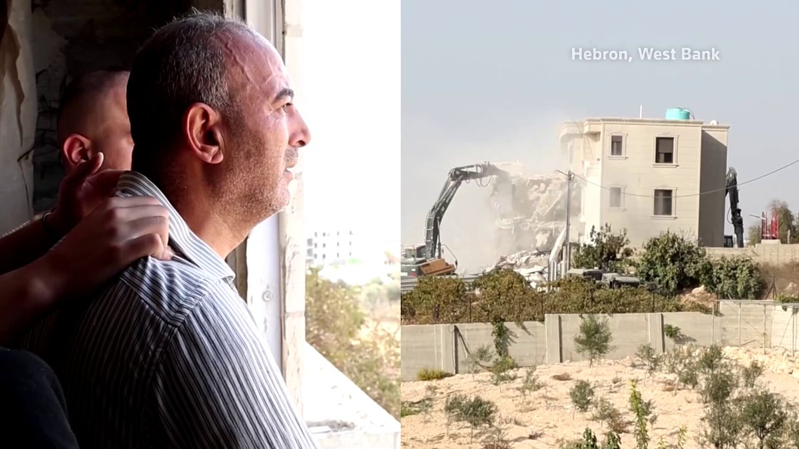
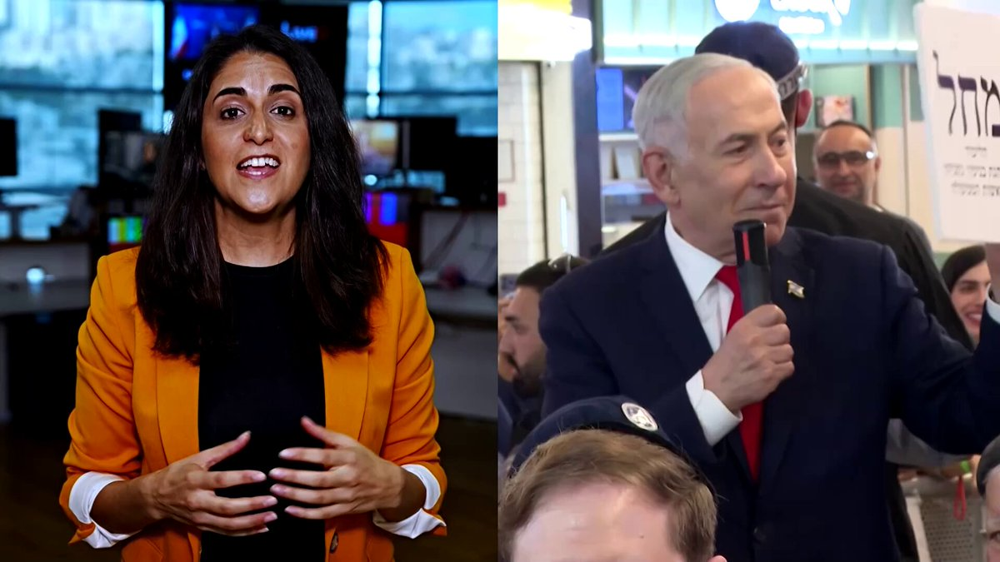

🕵️ A US intelligence memo led the day. Barak Ravid (Axios) reported that US intelligence finds Iran has "substantially increased" efforts to target American diplomats and officials in the Middle East and beyond, with lethal plots reaching "advanced stages", per a memo to Secretary of State Rubio. Reuters and the BBC carried the same warning.
⚔️ Reuters reports Trump said the US may carry out another military operation against Iran. CENTCOM posted photos of A-10 jets on scheduled patrols over the region.
🛢️ Gulf fallout continued: Reuters says the UAE's Ras Al Khaimah shut all its beaches as neighbours grapple with an oil spill.

📷 Barak Ravid · The memo
🔇 No new Gaza or Hamas updates from the watched accounts in the last 24 hours.
🏚️ The West Bank was again the focus. After Friday's attack in which, per AFP, two Palestinians killed two Israeli soldiers before being shot dead, Israeli forces pushed into Hebron vowing a "heavy price". AFP says around 250 families were displaced; Reuters puts it at about 1,200 Palestinians and says homes were demolished and roads damaged. Reuters also reports the five Italian activists held in the West Bank have been repatriated.
🗳️ Ahead of Tuesday's election, Reuters says polls project a deadlock between Netanyahu and opposition leader Gadi Eisenkot, AFP says Arab-majority lists could be kingmakers, and Ravid reports Trump advisers see "opportunity beyond Netanyahu".

📷 Reuters · Hebron demolitions
📷 Reuters · Polls deadlock